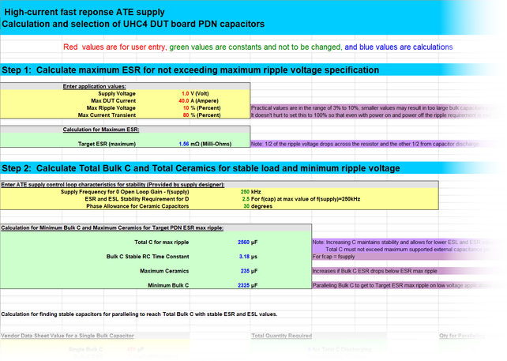
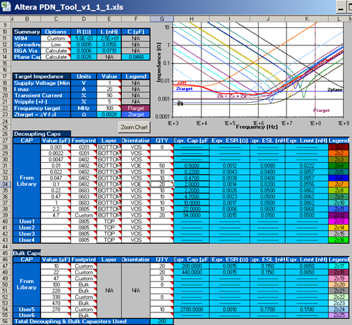

Step 4: Select PDN capacitors
This is the fourth of five steps in the Power Distribution Network (PDN) design. Use the UHC4 / UHC4T impedance calculation spreadsheet to semi-automate your design process.
Considerations for selecting high-frequency ceramic capacitors
- Low Z is limited to the region around the fcap of the capacitor, so multiple values with a variety of fcap are required to cover the full bandwidth.
- Even ceramics have a finite ESR and ESL, so be sure to parallel enough of the same value cap to get the ESR below the DUT Ztarget for ripple and increase the bandwidth of coverage.
- Very small ESR leads to high Q and larger variations in impedance requiring a closer spacing of capacitor fcap values. Paralleling a higher ESR capacitor allows wider spacing between capacitor fcap values.
- Above 50 MHz the Power Planes, PCB Vias, Socket, and BGA Via topology can dominate the PDN inductance and limit the high frequency bandwidth.
- Below 1 MHz the bulk tantalum and electrolytic capacitors dominate with the large C values.
Calculation Spreadsheet for Selecting PDN Capacitors
To access the spreadsheet click UHC4 / UHC4T impedance calculation spreadsheet.
Examples
Spreadsheet for step 1 through 3 calculation

Altera PDN Tool V1.1
Additional spreadsheet calculators can provide better high frequency predictions with the addition of plane capacitance, spreading inductance, via inductance, and capacitor mounting inductance.
One example is Altera’s PDN Calculator, which can be accessed free of charge. Altera also provides additional documentation (http://www.altera.com/literature/ug/ug_pdn.pdf) and other articles (http://www.altera.com/technology/signal/board-design-guidelines/sgl-bdg-index.html).

See the recipes and practical tips (see links below or above) or continue with Step 5: Simulation and verification.
Functional changes
- Introduced in SmarTest 7.2.1